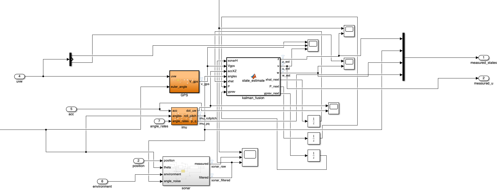
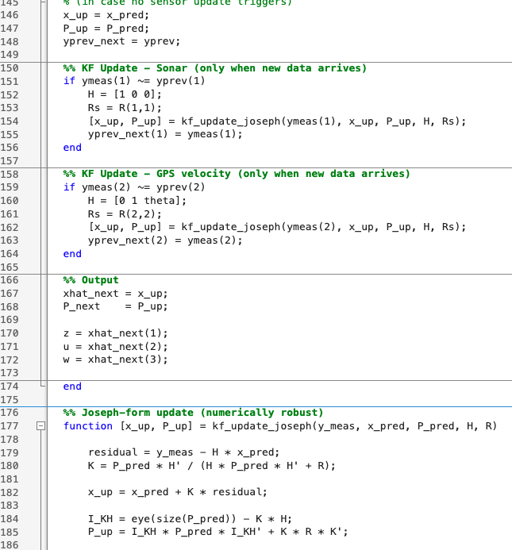
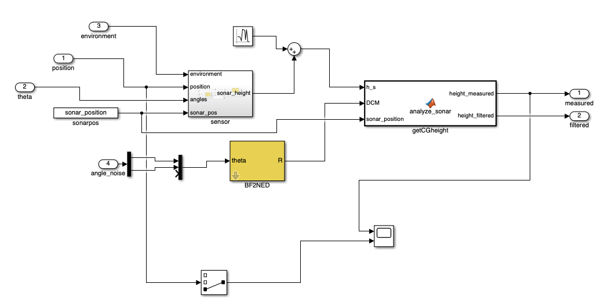
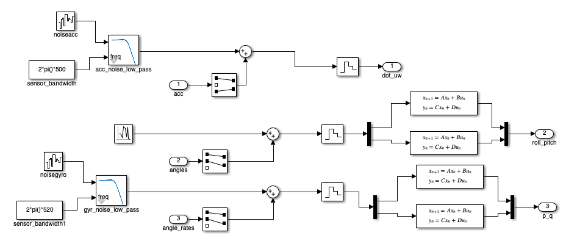
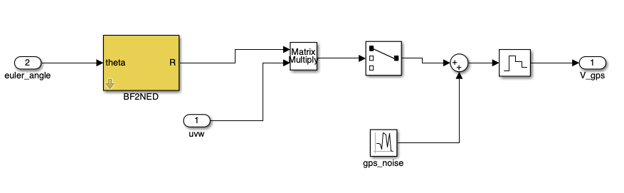

Overview
System-level sensing and filtering for a real control environment
This project focused on the sensing and digital signal processing side of the Oceanos control system. The goal was to build a reliable simulation and filtering pipeline in MATLAB/Simulink for multiple onboard sensors, allowing noisy measurements to be processed into cleaner and more useful signals for estimation and control.
The work involved integrating data from GPS, IMU, and sonar sensors, studying the structure of the sensing blocks, and designing filtering approaches such as Butterworth and Kalman filters to improve signal quality and state estimation.
Tools
MATLAB · Simulink
Sensors
GPS · IMU · Sonar
Focus
DSP · Filtering · Estimation
Context
Real boat control system

Part 1
Kalman Filter
A major part of the work was understanding and refining the Kalman filtering structure used inside the sensing pipeline. This included studying how the model combines noisy sensor measurements with system dynamics in order to produce smoother and more reliable state estimates.
Beyond implementation, the task also involved understanding the role of the filter parameters, noise assumptions, and sampling choices, so the model could later be tuned in a meaningful engineering way.

Part 2
Sonar Signal Processing
The sonar measurement chain was analyzed to extract useful height-related information while rejecting noise. This included examining the transformation of raw measurements into physically meaningful variables and using filtering blocks to reduce fluctuations caused by sensor noise and motion.
Special attention was given to how sonar information interacts with the rest of the sensing system, since reliable height estimation is especially important in a dynamic marine environment.

Part 3
IMU Filtering
The IMU branch required filtering for motion-related quantities such as orientation and angular rates. Butterworth low-pass filtering was used to improve measurement quality while preserving the useful dynamics needed by the control system.
This part of the project highlighted the tradeoff between noise reduction and responsiveness, which is a key design issue in real-time sensing and control.

Part 4
GPS Integration
GPS data was incorporated as part of the wider sensing architecture, contributing global position and motion-related information to the system. The challenge was not only reading the data, but integrating it consistently with the other sensors inside a unified simulation framework.
In practice, this meant treating the sensing pipeline as a combined system rather than a collection of isolated blocks.
Outcome
What this project taught me
This work gave me hands-on experience with real engineering tradeoffs in sensing, filtering, and simulation. More specifically, it strengthened my understanding of DSP in practical systems, how sensor models behave under noise, and how estimation methods fit into a larger automatic control architecture.
It also deepened my ability to work inside a large technical model, understand existing code and block structures, and improve them in a structured and engineering-oriented way.